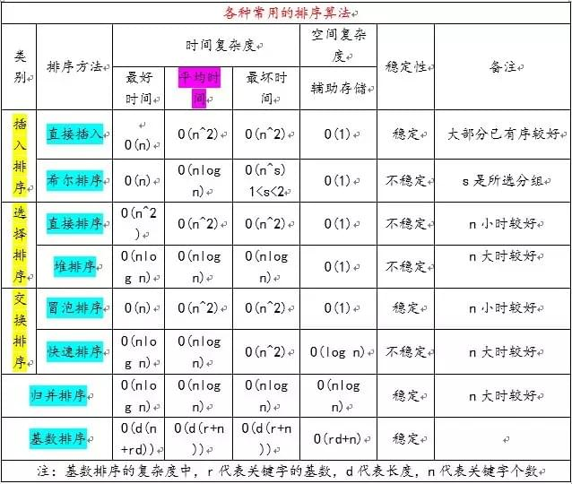
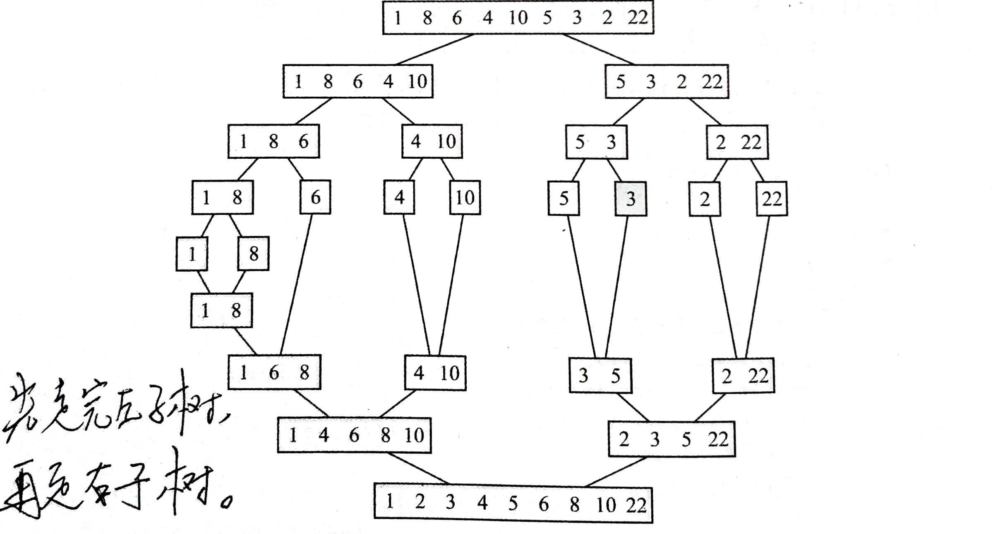

![]()
数据结构的选择：首先得有一堆数据，然后，在确定了这堆数据所需的抽象操作后，便可依据这些抽象操作及运行环境来进一步决定“哪种数据结构的实现形式最有效“。

基础
时间复杂度是用来描述随着问题规模的扩大，程序运行时间会有如何的增长速度。这也是$\mathcal{O}(2n) = \mathcal{O}(n)$的原因。
称$\mathcal{O}(1),\mathcal{O}(\log n), \mathcal{O}(n), \mathcal{O}(n^c)$为多项式级的复杂度，称$\mathcal{O}(c^n), \mathcal{O}(n!)$为非多项式级的复杂度。
- 如果一个问题可以找到一个能在多项式的时间里解决它的算法，那么这个问题就属于P问题。
- 不确定能不能在多项式时间内解决，但能在多项式时间内验证的问题属于NP问题。
- 如果能找到这样一个变化法则，对任意一个程序A的输入，都能按这个法则变换成程序B的输入，使两程序的输出相同，那么我们说，问题A可约化为问题B。通常，我们所说的“可约化”是指的可“多项式地”约化(Polynomial-time Reducible)。同时满足下面两个条件的问题就是NPC问题：首先，它得是一个NP问题；然后，所有的NP问题都可以约化到它。只要任意一个NPC问题找到了一个多项式的算法，那么所有的NP问题都能用这个算法解决了，NP也就等于P 了。
- 满足NPC问题定义的第二条但不一定要满足第一条（就是说，NP-Hard问题要比 NPC问题的范围广）的问题称为NP-Hard问题。
排序
为使不同算法之间的比较独立于机器，定义排序算法的两个关键属性——比较次数和移动次数，并用大$\mathcal{O}$ 近似给出，表示这些次数的数量级。

基本的排序算法
冒泡排序
1 | template <class T> |
该算法无视数据的原始顺序，任何情况下，比较次数和移动次数均为 $\mathcal{O}(n^2)$ 。
选择排序
可看做冒泡的进阶，通过交换索引的方式，降低了移动次数。
1 | template <class T> |
该算法无视数据的原始顺序，任何情况下，比较次数均为 $\mathcal{O}(n^2)$ ，移动次数均为 $\mathcal{O}(n)$ 。
插入排序
可看做反向冒泡，相较前两种，更充分地利用了数据的现有情况。

1 | template <class T> |
缺点：
- 只能识别出已排序的数组部分是否已在合适位置上，而不能识别出未排序的数组部分是否已在合适位置上，如${5,2,3,1}$ 中的 $2, 3$ 已在合适位置上，却仍需多余的移动次数；
- 插入操作不是局部操作，可能需要移动大量元素；
优点：
- 只有在需要时才会对数组进行排序；
最好的情况下，比较次数和移动次数均为 $\mathcal{O} (n)$ ；最坏的情况下，比较次数和移动次数均为 $\mathcal{O} (n^2)$ ；平均情况下，比较次数和移动次数均为 $\mathcal{O} (n^2)$ 。
总结
在平均情况下，冒泡排序的比较次数近似为插入排序的两倍，移动次数与插入排序相同；而冒泡排序与选择排序的比较次数是一样的，移动次数比选择排序多 n 次。
- 当数据由整型组成时，优先考虑*比较次数，应采用插入*排序；
- 当数据项是大的结构时，优先考虑*移动次数，宜采用选择*排序。
梳排序
当数据具有比较良好的结构时（即一些大的元素在数组底部，小的元素在数组顶部），可对冒泡排序添加一个标志位，当某次冒泡过程中没有发生交换时，就可以终止排序。
由此有了梳排序：按不同步长进行比较交换实现对数据的预处理，最后进行有标志位的冒泡排序。
1 | template <class T> |
梳排序中预处理阶段的比较次数约为 $\mathcal{O}(n \lg n)$ ，无视数据顺序。
决策树
所有的基于比较的排序算法均可写为决策树的形式，故通过对决策树的分析可以得到对基于比较的排序算法更为深入的理解。
i 层完全决策树有 $2^{i-1}$ 个叶子节点， $2^{i-1}-1$ 个非叶子节点，故对于更为一般的 i 层决策树的叶子节点数 m 和非叶子节点数 k 满足： $m\le 2^{i-1}, k\le 2^{i-1}-1$ 。
n 个元素的数组有 n! 种排列情况，每种排列情况都可通过一个叶子节点来表示，但排序算法会出现重复和无效的情况，故决策树还会出现一些额外的叶子节点，因此， $n!\le 2^{i-1}$ ，即完全决策树的叶子节点数是数组排列情况数的上限。
排序算法在最坏情况下的时间复杂度即为相应决策树的深度 i ，又由上一条的结论可得： $i-1\le \lg(n!) \le \mathcal{O}(n\lg n)$ ，故基于比较的排序算法可达到的最好的时间复杂度为 $\mathcal{O}(n \lg n)$ 。
高效排序算法
快速排序
遵循将原始问题变为能更容易、更快速解决的子问题这一原则，在排序的准备过程中实现对数据的排序，这个准备过程即为找到边界值并划分为两个子数组的递归过程。
在这个准备排序的过程中，排序的思想有些模糊，而这个过程却正是快速排序的核心所在。
采用对边界值选择的不同策略，以及对两个子数组的不同划分方式，可产生快排的各种不同的分支，按对两个子数组的不同划分方式可粗略的分为两类：
- 比较复杂度优先的划分方式（以选取数组第一个值作为边界值为例）
1 | void quicksort(int s[], int l, int r) |
- 移动复杂度优先的划分方式（以选取数组中间位置的元素作为边界值为例）
1 | template <class T> |
若将原始数组看做一棵树的根节点，那么每次划分便会产生更深一层的叶子节点。但无论边界值在哪划分结果如何，对于同一层的所有叶子节点所需要的比较次数之和均为 $\mathcal{O}(n)$ ，故该树产生的层数越深，比较复杂度越高，最好的情况为 $\mathcal{O}(\lg n)$ ，最差的情况为 $\mathcal{O}(n)$ ，平均情况为 $\mathcal{O}(\lg n)$ 。
另外，快速排序算法并不适合小型数组，对于小于30个数据项的小数组来说，插入排序比快速排序更有效，故可以子数组长度为条件对算法做融合。
归并排序
快速排序很难控制划分过程，难以保证划分产生的子数组有大致相同的长度；归并排序不去控制划分过程，而通过添加一新的条件，去着重于合并两个已排好序的数组。
合并过程中我们可以保证如果两个当前元素相等时，我们把处在前面的序列的元素保存在结 果序列的前面，这样就保证了稳定性。
1 | void merge(int *a, int begin, int end, int *tmp) |
任何情况下，比较次数和移动次数均为 $\mathcal{O}(n \lg n)$ 。

用迭代来取代递归或者对短长度的子数组使用插入排序，将提高归并的效率，以迭代为例，示例代码如下：
1 |
归并需要额外的 $\mathcal{O}(n)$ 的存储空间，对于大数据来说这是不现实的，一个解决方法是使用链表，示例代码如下：
1 |
堆排序
计数排序
基数排序
希尔排序
标准模板库中的排序
树
依据结构，可将二叉树分为满二叉树、完全二叉树、平衡二叉树和其它。在满二叉树的基础上，在最底层从右往左删除若干节点得到的便是完全二叉树。而平衡二叉树是左右两个子树的高度值相差不超过1的树。
树的度为2的节点个数总比叶子节点个数少1个。若层数从1开始数起，满二叉树第k层的节点个数为$2^{k-1}$，总节点个数为$2^k - 1$。
二叉查找树
- 对于用数组来存储数据，用二分法来做查找的情况，会面临插入操作十分复杂的问题
- 对于用链表来存储数据，用断裂重连的方法来做插入的情况，会面临查找操作十分复杂的问题
而二叉查找树这种数据结构融合了二者的优点，解决了二者的缺点，十分适用于数据的查找。
基础
实现方式
- 数组结构：维护三个数组，一个数组为数据项，另两个数组为当前数据项左右子节点的偏移量（以当前数据项在数组中的位置为基址）；因为做插入操作十分不便，一般不用（堆会用）。
- 链结构：维护一个节点结构，内含一个数据项和两个指向节点结构的指针。
分类
- 满二叉树 = 完全二叉树 < 决策树 < 二叉树
- 满足第 i 层有 $2^{i-1}$ 个节点的树称为完全二叉树
- 所有的非终端节点均有两个非空子节点的树称为决策树，这种树满足：叶节点的数目 m 大于非终端节点的数目 k，并且 m = k + 1
- 平衡二叉树：
- 堆：
名词
- 树的高度：最深节点的层次，如空树为0，一个节点构成的树为1
- 路径的长度：每个节点都可以从根节点经过唯一的一个弧序列到达，此弧序列被称为路径，路径中弧的数量称为路径的长度
- 树中节点的命名：根，左子节点，右子节点，左子树，右子树，叶子节点，父节点
插入、删除、查找、遍历
查找算法的复杂度通过查找过程中的比较次数来度量。
插入
构建一棵二叉查找树相当于向一棵空树中插入 n 个节点，其最坏情况下的复杂度为 $\mathcal{O}(n^2)$ ，最好情况与平均情况均为 $\mathcal{O}(n \lg n)$ 。
遍历
树的遍历可分为广度优先遍历（体现树的结构）与深度优先遍历（体现排序）。
深度优先遍历是尽可能地向同一个方向进行（左或右），
2-3树与红黑树
拔高的理解方向 https://www.cnblogs.com/yangecnu/p/Introduce-Red-Black-Tree.html 。
二叉堆
若用链结构，堆的插入操作将十分复杂，又因堆的性质（完全平衡，且最后一层的叶子都处于最左侧的位置(完全二叉树)，即堆中每个元素的位置可用一固定的关系式索引），可用数组更为方便的实现。具体为：设数组下标为0的位置为完全二叉树的根节点，记为节点0，因为树的度为2的节点个数总比叶子节点个数少一个，所以节点k的左右子节点分别为节点2k+1和2k+2，父节点为节点$floor(\frac{k-1}{2})$。
重建堆的时间复杂度为$\mathcal{O}(n)$，将堆做排序的时间复杂度为$\mathcal{O}(n\log n)$，故用堆排序对无序数组做排序的时间复杂度为$\mathcal{O}(n\log n)$。
用数组实现最小堆如下：
1 | template<class T, int capacity> |
平衡树
完全平衡树（AVL树）：所有节点的左子树与右子树的高度差均不能超过1；将左子树的高度减去右子树的高度称为该节点的平衡因子（BF）。

栈与队列
栈
记忆序列，在需要遍历操作时可利用记忆特性实现一些特殊需求，如树的遍历、链表反转、符号匹配、大数相加等。
队列
等待序列，可模拟实现排队论中的模型。
优先队列
四种实现方式
两种链表的变种
- 无序链表：入队 O(1)，出队 O(n)
- 有序链表：入队 O(n)，出队 O(1)
一个有序链表+一个无序链表：入队 O(sqrt(n))，出队 O(1)
一个指针数组+一个无序链表：入队 O(sqrt(n))，出队 O(1)
排序树或堆：入队 O(lg(n))，出队 O(1)
因为大多用堆实现，故可以直接看为堆，另起名为优先队列的原因是为方便思考（在使用时表现为带优先级的队列）。
demo 如下：
1 | void test_proprityQueue(void) |
递归
系统在实现时利用的是具有记忆特性的栈。
定义新对象或新概念的基本规则之一是：定义中只能包含已经定义过的或含义明显的术语，否则需要给定义加上形式约束，以保证其满足存在性和唯一性。这种打擦边球的定义称为递归定义，主要用于定义无限集合。
递归定义由两部分组成：锚(anchor)和产生新对象的构造规则。
递归常用于两个场景：生成和查找。
使用递归的好处是逻辑上的简单性和可读性，其代价是降低了运行速度（额外的函数调用和不必要的迂回计算）
分类
递归调用不是表面上的函数调用自身，而是一个函数的实例调用另一个函数的实例（这些调用在底层表示为不同的活动记录，并由系统区分，详见blank）。
按应用的任务一般分为以下 5 类。
尾递归
（单道）正向循环。
1 | void fun1(int i) { |
非尾递归
（叉道）反向循环。
1 | void fun2(int i) { |
将非尾递归形式转化为迭代形式都需要显示地使用栈，如二叉树的深度优先遍历。
尾递归是迭代生长消亡，非尾递归是栈形式的生长消亡。单条的非尾递归是条型的栈，多条的非尾递归是树型的栈（有几句递归调用便是几叉树，与调用是否在同一语句无关）。
多条非尾递归时间复杂度为$\mathcal{O}(k^h)$ ，其中h为树的深度，k为树的叉数。
计算二叉树叶子节点数的递归程序完美地诠释了递归的针对无限集合的生成和查询功能，如下：
1 | int num = 0; |
回溯
尝试一条路径不成功后，返回最近的十字路口尝试另一条路径，这种方法称为回溯。使用回溯法可以回到出发位置，这为成功解决问题提供了其他可能性。使用回溯须具备以下两个条件：
- 在迭代中使用非尾递归（利用栈具有记忆的特性，以此达到尝试未尝试过的路径的目的）。
- 在迭代尾部实现对递归记录的擦除以便回溯。
求解八皇后问题的实例代码片段如下：
1 | void ChessBoard::putQueen(int row) |
间接递归和嵌套递归
少见
不合理递归
有些任务不适合用递归来解决，如求解斐波那契数列，这种任务若用递归来解决则会出现多次重复同样计算的情况，计算复杂度会呈指数级增长。
递归相当于构建了一棵树，对于不合理递归是指该任务不适合构建成一棵树来解决。
不合理递归常见的代码形式为在同一行代码里出现两次或两次以上的递归调用，如 return fun(i-1) + fun (i-2) 。
总结
- 有两种场合使用非递归的实现方式更为可取：实时系统中，和多次执行的程序中。
- 如果在非递归的实现方式中无法避免使用栈，则推荐使用递归方式，因为两种方式的运行时间差距一般不会相差10倍；如果在计算时，程序中的某一部分毫无必要地重复，就应避免使用递归。
散列
数据压缩
哈夫曼编码
哈夫曼编码即为最优前缀编码，通过最优二叉树实现。
它的另一个性质是具有编解码时的无歧义（这也是前缀编码希望具有的性质，否则在编解码时会十分冗杂）。这是因为它采用二叉树的结构进行编码，若要编解码出现歧义，那么某个字符的编码需成为另一个歧义字符的编码的前缀，对应在二叉树上便是目标对象不在叶子节点上，而是在歧义目标对象的编码路径上。哈夫曼编码通过强制规定目标对象必须均在叶子节点上的方法，实现了编解码时的无歧义性。
用优先队列实现如下：
1 | void create_huffman_code(void) |
动态规划
若待求结果依赖子问题（即各子问题之间不独立），贪心法难以求解全局最优；同理，分治法将做许多冗余工作，重复地解决公共子问题。动态规划方法要寻找符合“最优子结构“的状态和状态转移方程的定义，在找到之后，这个问题就可以以“记忆化地求解递推式”的方法来解决。
最优子结构：
- 如果一个问题的解结构包含其子问题的最优解，就称此问题具有最优子结构性质。
- 在状态转移方程中，若等式右边下标不会用到等式左边下标的值，则称这种状态无后效性，也将与该状态相关的问题称为最优子结构。
在定义状态时，一定要定义成与数据索引相关的子问题（而非与数据量相关），这样就能在原始数据上设置固定围栏，执行有范围的拉网搜索，进而得到围栏内的最优解；然后借由最优子结构，通过记忆化地求解递推式，便可得到全局最优。
分类
线性模型
- 状态的表示呈线性排布，即状态的自变量为数组索引，通常用
F[k]来表示区间[1,k]上的最优解，然后通过状态转移计算出[1,k+1]上的最优解，逐步扩大线性范围，最终求得[1,N]上的最优解。如最长单调子序列、小朋友过桥。 - 当然还可扩展到多维，用
F[m][n]来表示区间[1,m]和[1,n]上的最优解，如最长公共子序列。 - 上述索引均为从1开始，一是因为状态的边界条件，二是为了保证状态和数据索引一致。
- 通常用自底向上的迭代方法求解。
区间模型
- 状态的表示呈区间排布，即状态的自变量为数组的两个索引（即区间），通常用
d[i][j]来表示区间 [i, j] 上的最优解，然后通过状态转移计算出 [i+1, j] 或者 [i, j-1] 上的最优解，逐步缩小区间的范围至终止状态，然后反向推理（递归自动实现），最终求得 [0, N-1] 的最优解。如最小插入回文串。 - 没有边界条件。
- 通常用自顶向下的递归方法求解，并借用备忘录免去冗余计算。
背包模型
- 带约束条件的线性模型，通常用
select[i][j]来表示做01规划时做到第i件物品且消耗容量j时获得的最大收益。如01背包问题。 - 与线性模型的边界条件一致。
- 通常用自底向上的迭代方法求解。
当不将物品放入背包也会出现容量损失时，问题便不再是离散的01规划问题，即不再是背包模型，这种问题一般需用回溯进行求解。如小偷偷商店问题。
总结
只须推得递推式，并确定停止条件即可，无须考虑繁琐的内部细节，计算机会在你定的条框下自动解决。
经典问题
topK
分治法
借用快排思想，时间复杂度为 $\mathcal{O}(n)$ ，对于没有运行内存限制的情况是速度最快的解决方案。
堆
将前 K 个数构建最小堆，并在内存中维护该最小堆（对于后 n-K 个数，若大于最小堆的堆顶则删掉堆顶并将该数插入堆中，否则忽略，如此遍历后得到的最小堆即为前 K 大的数），对于有运行内存限制的情况为最佳解决方案，时间复杂度为 $\mathcal{O}(n \lg k)$ 。